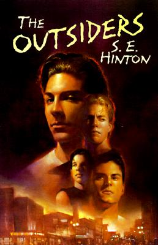

The Outsiders is a story told from the perspective of a 14-year-old boy named Ponyboy Curtis. The story is set in Tulsa, Oklahoma in 1965 and is about the conflict between two rival gangs that are separated by their socioeconomic status. The "greasers" are lower-class and the "Socs," short for "Socials" are upper-class preppy students.
Ponyboy goes through hard times in his relationships with his brothers, the greasers gang he considers family, and his closest friend Johnny. This book is read in most middle and high schools and had a popular movie adaptation that was produced in 1983.
About the author